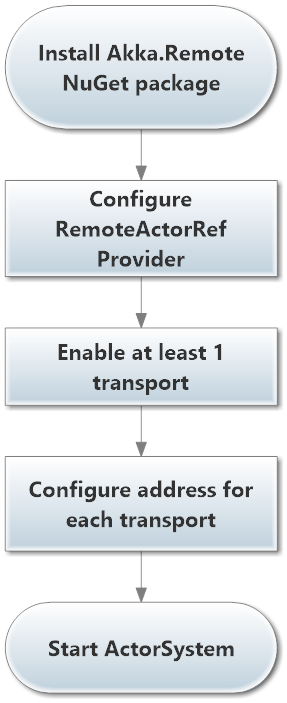
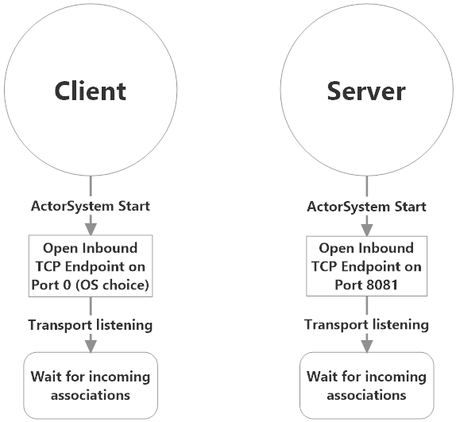
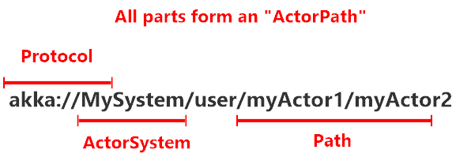
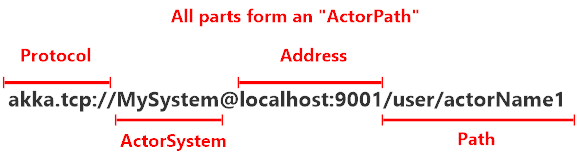
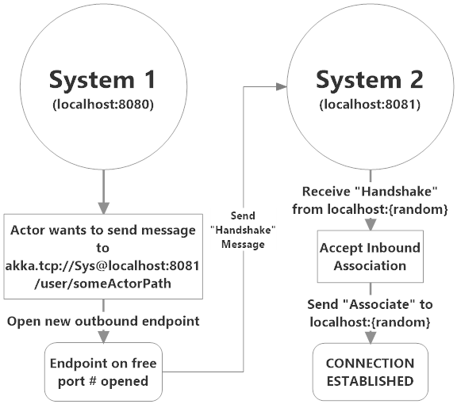

Akka.Remote Overview
Akka.NET uses the "Home Depot" extensibility model - the base Akka NuGet package provides all of the capabilities you need to create actors, IActorRefs, and pass messages, but the Akka.NET project ships dozens of additional modules which take the capabilities of Akka.NET and extend them to do new things!
Akka.Remote is the most powerful of all of these additional packages, as it is what brings the capability to build an ActorSystem across multiple processes over a computer network.
Akka.Remote's Capabilities
Akka.Remote introduces the following capabilities to Akka.NET applications:
- Location transparency with RemoteActorRef - write code that looks like it's communicating with local actors, but with just a few configuration settings your actors can begin communicating with actors hosted in remote processes in a way that's fully location transparent to your code.
- Remote addressing - Akka.Remote extends the
AddressandActorPathcomponents of Akka.NET to also now include information about how to connect to remote processes viaActorSelection. - Remote messaging - send messages, transparently, to actors running in remote
ActorSystems elsewhere on the network. - Remote deployment - remotely deploy actors via the
ActorOfmethod onto remoteActorSysteminstances, anywhere on the network! The location of your actors on the network becomes a deployment detail in Akka.Remote. - Multiple network transports - out of the box Akka.Remote ships with support for TCP, but has the ability to plugin third party transports and active multiple of them at the same time.
Distributed by Default
Everything in Akka is designed to work in a distributed setting: all interactions of actors use purely message passing and everything is asynchronous. This effort has been undertaken to ensure that all functions are available equally when running within a single machine or on a cluster of hundreds of machines. The key for enabling this is to go from remote to local by way of optimization instead of trying to go from local to remote by way of generalization. See this classic paper for a detailed discussion on why the second approach is bound to fail.
Ways in which Transparency is Broken
What is true of Akka need not be true of the application which uses it, since designing for distributed execution poses some restrictions on what is possible. The most obvious one is that all messages sent over the wire must be serializable. While being a little less obvious this includes closures which are used as actor factories (i.e. within Props) if the actor is to be created on a remote node.
Another consequence is that everything needs to be aware of all interactions being fully asynchronous, which in a computer network might mean that it may take several minutes for a message to reach its recipient (depending on configuration). It also means that the probability for a message to be lost is much higher than within one CLR, where it is close to zero (still: no hard guarantee!).
Message size can also be a concern. While in-process messages are only bound by CLR restrictions, physical memory and operating system, remote transport layer sets the maximum size to 128 kB by default (minimum: 32 kB). If any of the messages sent remotely is larger than that, maximum frame size in the config file has to be changed to appropriate value:
akka {
helios.tcp {
# Maximum frame size: 4 MB
maximum-frame-size = 4000000b
}
}
Messages exceeding the maximum size will be dropped.
You also have to be aware that some protocols (e.g. UDP) might not support arbitrarily large messages.
How is Remoting Used?
We took the idea of transparency to the limit in that there is nearly no API for the remoting layer of Akka: it is purely driven by configuration. Just write your application according to the principles outlined in the previous sections, then specify remote deployment of actor sub-trees in the configuration file. This way, your application can be scaled out without having to touch the code. The only piece of the API which allows programmatic influence on remote deployment is that Props contain a field which may be set to a specific Deploy instance; this has the same effect as putting an equivalent deployment into the configuration file (if both are given, configuration file wins).
Peer-to-Peer vs. Client-Server
Akka Remoting is a communication module for connecting actor systems in a peer-to-peer fashion, and it is the foundation for Akka Clustering. The design of remoting is driven by two (related) design decisions:
- Communication between involved systems is symmetric: if a system A can connect to a system B then system B must also be able to connect to system A independently.
- The role of the communicating systems are symmetric in regards to connection patterns: there is no system that only accepts connections, and there is no system that only initiates connections. The consequence of these decisions is that it is not possible to safely create pure client-server setups with predefined roles (violates assumption 2) and using setups involving Network Address Translation or Load Balancers (violates assumption 1).
For client-server setups it is better to use HTTP or Akka I/O.
Use Cases
Akka.Remote is most commonly used in distributed applications that run across the network, some examples include:
- Client applications (WPF, Windows Forms) with duplex communication requirements with remote servers;
- Server-to-Server applications;
- Embedded Akka.NET applications; (like this RaspberryPi example!)
- and any application that uses Akka.Cluster or any of its modules.
NOTE: Akka.Remote largely serves as plumbing for Akka.Cluster and the other "high availability" modules within Akka.NET. The use cases for using Akka.Remote by itself are largely limited to scenarios that don't require the elasticity and fault-tolerance needs that Akka.Cluster fulfills.
That being said, it's a good idea to understand how Akka.Remote works if you intend to use clustering. So keep reading!
Marking Points for Scaling Up with Routers
In addition to being able to run different parts of an actor system on different nodes of a cluster, it is also possible to scale up onto more cores by multiplying actor sub-trees which support parallelization (think for example a search engine processing different queries in parallel). The clones can then be routed to in different fashions, e.g. round-robin. The only thing necessary to achieve this is that the developer needs to declare a certain actor as “WithRouter”, then—in its stead—a router actor will be created which will spawn up a configurable number of children of the desired type and route to them in the configured fashion. Once such a router has been declared, its configuration can be freely overridden from the configuration file, including mixing it with the remote deployment of (some of) the children. Read more about this in Routers.
Enabling Akka.Remote
Enabling Akka.Remote in your own applications is simple:

First you need to install the Akka.Remote NuGet package, which you can do like this:
PS> Install-Package Akka.Remote
Next, you'll need to enable the RemoteActorRefProvider inside HOCON configuration and bind your transport to an accessible IP address and port combination. Here's an example:
akka {
actor {
provider = "Akka.Remote.RemoteActorRefProvider, Akka.Remote"
}
remote {
helios.tcp {
port = 8080
hostname = localhost
}
}
}
Addresses, Transports, Endpoints, and Associations
In the above section we mentioned that you have to bind a transport to an IP address and port, we did in that in HOCON inside the helios.tcp section. Why did we have to do any of that?
Well, let's take a step back to define some key terms you'll need to be familiar with in order to use Akka.Remote:
- Transport - a "transport" refers to an actual network transport, such as TCP or UDP. By default Akka.Remote uses a Helios TCP transport, but you could write your own transport and use that instead of you wish.
- Address - this refers to an IP address and port combination, just like any other IP-enabled protocol. You can also use a hostname instead of an IP address, but the hostname must be resolved to an IP address first.
- Endpoint - an "endpoint" is a specific address binding for a transport. If I open a TCP transport at
localhost:8080then I've created an endpoint for that transport at that address. - Association - an "association" is a connection between two endpoints, each belonging to a different
ActorSystem. Must have a valid outbound endpoint and a valid inbound endpoint in order to create the association.
NOTE: Learn more about Helios and the default Akka.Remote transports here.
These terms form the basis for all remote interaction between ActorSystem instances, so they're critically important to learn and distinguish.
So in the case of our previous example, localhost:8080 is the inbound (listening) endpoint for the Helios TCP transport of the ActorSystem we configured.
How to Form Associations between Remote Systems
So imagine we have the following two actor systems configured to both use the helios.tcp Akka.Remote transport:
Client
akka {
actor {
provider = "Akka.Remote.RemoteActorRefProvider, Akka.Remote"
}
remote {
helios.tcp {
port = 0 # bound to a dynamic port assigned by the OS
hostname = localhost
}
}
}
Server
akka {
actor {
provider = "Akka.Remote.RemoteActorRefProvider, Akka.Remote"
}
remote {
helios.tcp {
port = 8081 #bound to a specific port
hostname = localhost
}
}
}
Here's what the initial state of those two systems would look like upon starting both ActorSystems.

Both ActorSystem instances start, open their transports and bind them to the configured addresses (which creates an inbound endpoint for each) and then waits for incoming association attempts from elsewhere.
In order to actually form an association between the client and the server, one of the nodes has to attempt contact with the other. Remote associations are formed lazily!
Addressing a Remote ActorSystem
In order to form an association with a remote ActorSystem, we have to have an Address for that ActorSystem.
All local Akka.NET actors have an Address too, as part of their ActorPath.
A local ActorPath look like this:

A remote ActorPath looks like this:

Each ActorPath consists of four parts:
- Protocol - this defines the protocol used to communicate with this actor. Default local protocol is in-memory message passing.
- ActorSystem - the name of the
ActorSystemto which this actor belongs. - Address - refers to the inbound endpoint you can use to communicate with this actor via the protocol. There's a default address for local-only actors and it always get committed from local
ActorPaths. - Path - refers to the path of this actor in the hierarchy.
When you want to connect to a remote ActorSystem, two important changes occur to the address:
- The protocol gets augmented with the protocol of the network transport - so in this case, since we're using the Helios TCP transport the protocol for communicating with all remote actors in our
ActorSystemchanges fromakka://toakka.tcp://. When you deploy an actor remotely or send a message to a remote actor viaActorSelection, specifying this protocol is what tells your localActorSystemhow to deliver this message to the remote one! - The address gets populated with the inbound endpoint on the transport -
localhost:9001in this case. This lets your local system know how to attempt to establish an outbound endpoint to the remoteActorSystem.
NOTE: for more information about addressing in Akka.NET, see Actor References, Paths and Addresses
Here's how we actually use a remote Address to form an association between two remote ActorSystem instances.
The Association Process
This information exposes some of the Akka.Remote internals to you, but it's important to know because without this information it's very difficult to troubleshoot association problems in production - which you should anticipate as a product of imperfect networks.

The association process begins when System 1 has an actor who wants to send a message to an ActorSelection belonging to an actor who resides on System 2.
The RemoteActorRefProvider built into System 1, upon seeing the remote address in the ActorSelection, will check to see if a remote connection to System 2 is already open. Since there isn't one, it will open a new outbound endpoint using its TCP transport (which, internally, will create a new TCP socket on a new port - but that's beyond the scope of this course) and send an "handshake" message to System 2.
System 2 will receive the handshake, accept the inbound association, and reply with an "Associate" message which will complete the association process.
System 1 will then finally deliver the message contained in the ActorSelection to the appropriate actor on System 2.
That's how associations work in a nutshell!
Internals: How Akka.Remote Associations Work
We have a video that illustrates how this process works - this video was really designed for Akka.NET contributors who work on Akka.Remote, but there's a lot of benefit in understanding it as an end-user of Akka.NET too!